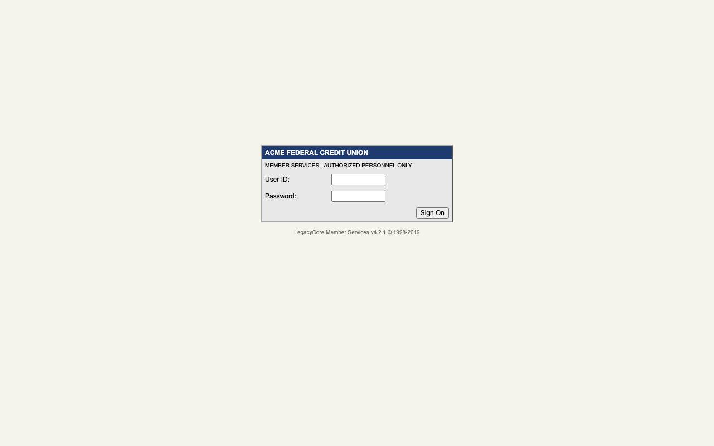
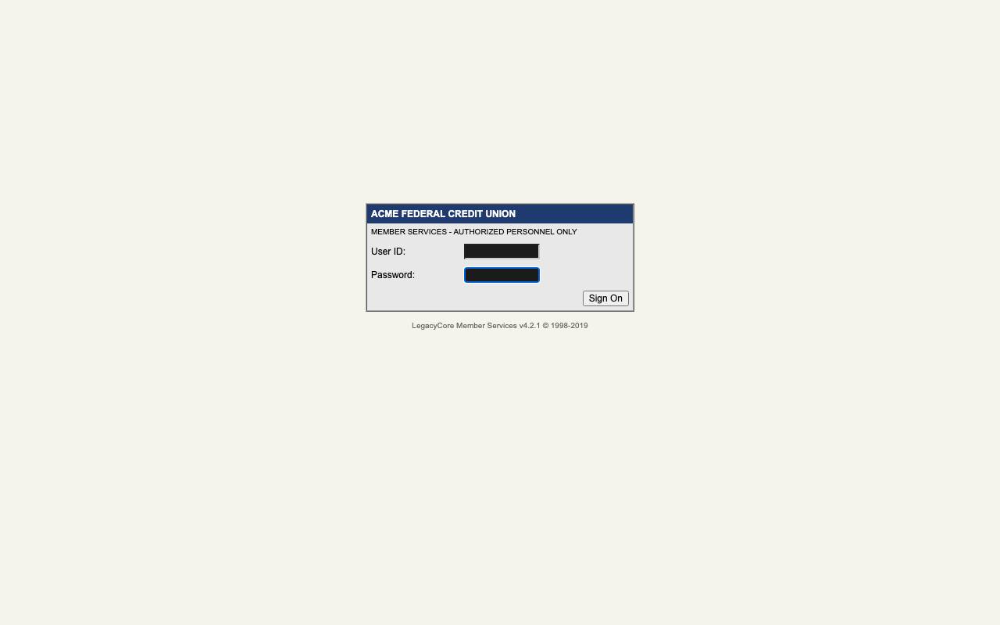

Sign on to LegacyCore with the operator's service account
- capability
legacycore.session.sign_on@1.0.0- model
- scripted
- turns
- 5
- actions
- 3
- estimated_cost_usd
- 0.0
Timeline
| 0.3s | console.started | url: http://127.0.0.1:8765 |
| 0.3s | run.started | kind: discovery · run_id: 20261001T043129Z-discovery-legacycore-session-sign-on-f759 · subject: Sign on to LegacyCore with the operator's service account · model: scripted · tenant: acme · evidence_dir: runs/20261001T043129Z-discovery-legacycore-session-sign-on-f759 · inputs: [] |
| 2.0s | evidence.captured | turn-00  |
| 2.0s | agent.action | tool: define_capability · summary: id=legacycore.session.sign_on, title=Sign on to LegacyCore, description=Signs on with the service account so other capabilities start from the home screen., inputs=[], outputs=[] · rationale: scripted |
| 2.0s | agent.action_result | ok: True · message: capability legacycore.session.sign_on declared with inputs [] and outputs [] |
| 2.0s | agent.action | tool: fill · summary: ref=e4, secret=username, target=textbox (label 'User ID') · rationale: scripted |
| 2.0s | policy.decision | verdict: allow · risk: reversible · reason: edits unsaved form state |
| 2.1s | agent.action_result | ok: True · message: entered {{secrets.username}} in textbox (label 'User ID') |
| 3.8s | evidence.captured | turn-02 |
| 3.8s | agent.action | tool: fill · summary: ref=e6, secret=password, target=textbox (label 'Password') · rationale: scripted |
| 3.8s | policy.decision | verdict: allow · risk: reversible · reason: edits unsaved form state |
| 3.9s | agent.action_result | ok: True · message: entered {{secrets.password}} in textbox (label 'Password') |
| 5.5s | evidence.captured | turn-03  |
| 5.5s | agent.action | tool: click · summary: ref=e7, target=button 'Sign On' · rationale: scripted |
| 5.5s | policy.decision | verdict: allow · risk: reversible · reason: navigates or submits without a commit keyword |
| 5.7s | agent.action_result | ok: True · message: clicked button 'Sign On' |
| 7.4s | evidence.captured | turn-04 |
| 7.4s | agent.action | tool: finish · summary: summary=signed on, success_text=FUNCTIONS · rationale: scripted |
| 7.4s | artifact.recorded | capability: legacycore.session.sign_on@1.0.0 · steps: 4 · path: capabilities/legacycore/legacycore.session.sign_on@1.0.0.yaml · summary: signed on |
| 7.4s | agent.action_result | ok: True · message: recorded legacycore.session.sign_on@1.0.0 |
| 7.4s | discovery.finished | status: succeeded · capability: legacycore.session.sign_on@1.0.0 · failure: None · turns: 5 · usage: {"input_tokens": 0, "output_tokens": 0, "cache_read_input_tokens": 0, "cache_creation_input_tokens": 0} · estimated_cost_usd: 0.0 |
artifact.yaml
schema: rote.capability/v1
id: legacycore.session.sign_on
version: 1.0.0
kind: session
title: Sign on to LegacyCore
description: Signs on with the service account so other capabilities start from the home screen.
status: draft
app: {id: legacycore, surface: web, product_versions: '>=4.2.0,<5.0.0'}
idempotent: true
side_effects: reversible
secrets:
password: {description: password for the legacycore service account}
username: {description: username for the legacycore service account}
steps:
- id: s01_open_signon_asp
intent: Open signon.asp
action: {type: navigate, url: '{{app.base_url}}/signon.asp'}
risk: read_only
expect:
- {type: url, path: signon.asp}
- id: s02_fill_user_id_textbox
intent: Enter {{secrets.username}} in 'User ID' textbox
action:
type: fill
target:
description: '''User ID'' textbox'
role: textbox
locators:
- {by: attribute, tag: input, attribute: name, value: USRID}
- {by: label, role: textbox, label: User ID}
- by: css
selector: body > table > tbody > tr > td > form > table > tbody > tr > td > table > tbody > tr:nth-of-type(3)
> td:nth-of-type(2) > input
value: '{{secrets.username}}'
risk: reversible
- id: s03_fill_password_textbox
intent: Enter {{secrets.password}} in 'Password' textbox
action:
type: fill
target:
description: '''Password'' textbox'
role: textbox
locators:
- {by: attribute, tag: input, attribute: name, value: PSWD}
- {by: label, role: textbox, label: Password}
- by: css
selector: body > table > tbody > tr > td > form > table > tbody > tr > td > table > tbody > tr:nth-of-type(4)
> td:nth-of-type(2) > input
value: '{{secrets.password}}'
risk: reversible
- id: s04_click_button_sign_on
intent: Click button 'Sign On'
action:
type: click
target:
description: button 'Sign On'
role: button
locators:
- {by: attribute, tag: input, attribute: name, value: BTNSO}
- {by: role, role: button, name: Sign On}
- by: css
selector: body > table > tbody > tr > td > form > table > tbody > tr > td > table > tbody > tr:nth-of-type(5)
> td:nth-of-type(2) > input
risk: reversible
expect:
- {type: url, path: default.asp}
- {type: text, text: FUNCTIONS, frame: menu}
success:
description: '''FUNCTIONS'' is shown'
all_of:
- {type: url, frame: menu, path: menu.asp}
- {type: text, text: FUNCTIONS, frame: menu}
provenance:
method: discovery
recorded_at: '2026-10-01T04:31:36.820782Z'
source_run: 20261001T043129Z-discovery-legacycore-session-sign-on-f759
model: scripted
goal: Sign on to LegacyCore with the operator's service account
tenant: acme
product_version: 4.2.1
Raw
result.json
{
"run_id": "20261001T043129Z-discovery-legacycore-session-sign-on-f759",
"status": "succeeded",
"goal": "Sign on to LegacyCore with the operator's service account",
"capability": "legacycore.session.sign_on@1.0.0",
"artifact_path": "capabilities/legacycore/legacycore.session.sign_on@1.0.0.yaml",
"outcome": null,
"failure": null,
"turns": 5,
"actions": 3,
"interventions": [],
"usage": {
"input_tokens": 0,
"output_tokens": 0,
"cache_read_input_tokens": 0,
"cache_creation_input_tokens": 0
},
"estimated_cost_usd": 0.0,
"model": "scripted",
"duration_ms": 7087,
"evidence_dir": "runs/20261001T043129Z-discovery-legacycore-session-sign-on-f759"
}